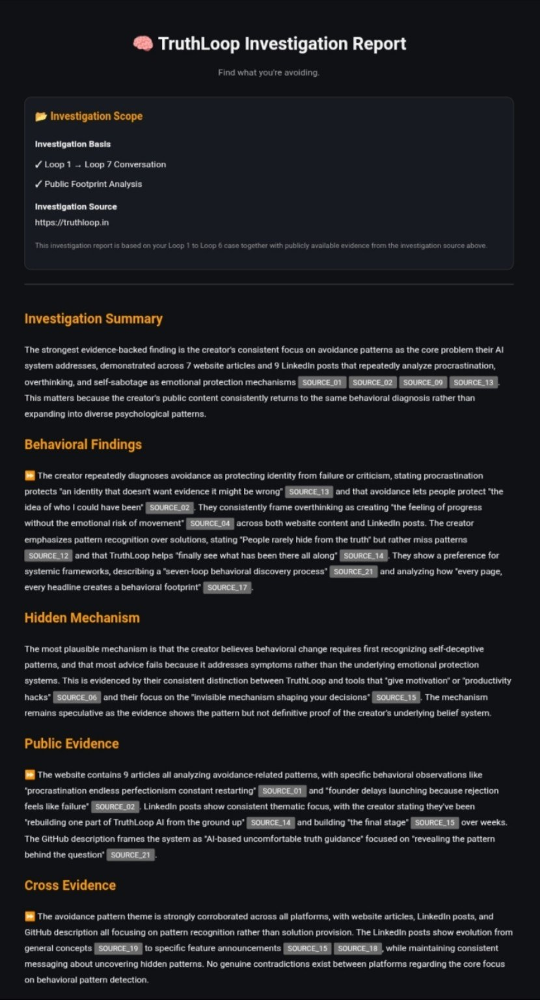
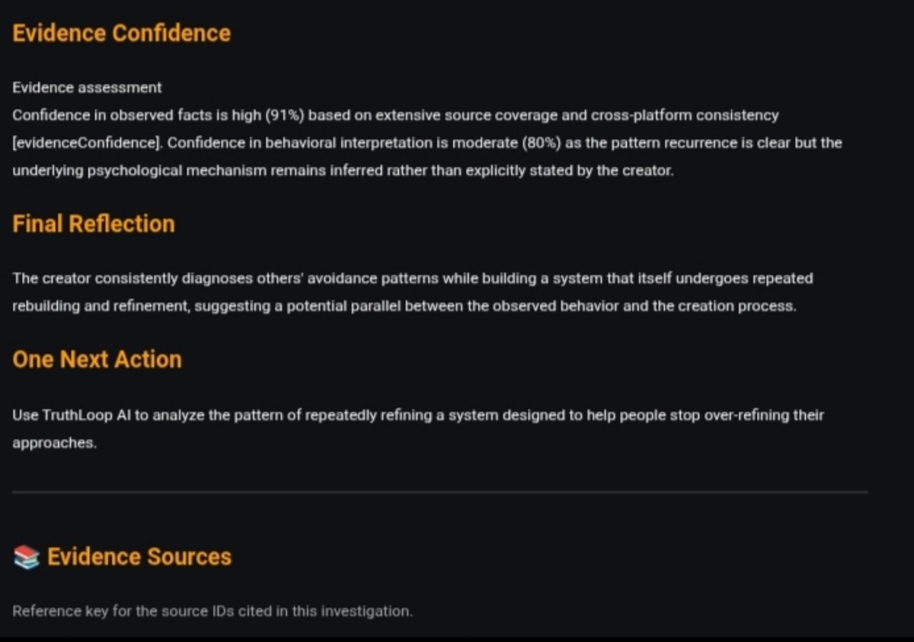

What Is a TruthLoop AI Loop 7 Investigation Report?
Most AI Gives Answers. Loop 7 Looks For Patterns.
Most AI tools are built to answer a question, summarize information, or suggest a next step. TruthLoop takes a different approach.
A Loop 7 Investigation Report is the final investigation stage inside TruthLoop AI. It brings together what happened during the investigation and the evidence available to the system, then turns those signals into a structured view of the pattern being investigated.
The goal is not to tell someone what they want to hear. The goal is to make repeated patterns, contradictions, hesitation, and decision friction easier to see.
Who Is Loop 7 For?
TruthLoop is built for people who make important decisions and may have a public footprint that can add useful context to an investigation.
The common thread is not a job title. It is the need to make decisions, understand recurring behavior, and get clearer about what may be blocking progress.
How Does Loop 7 Work?
Initial Investigation — Loop 1
The investigation begins with the user's situation. The user starts the TruthLoop conversation and describes the problem, decision, or recurring situation they want to understand.
Loop 1 establishes the visible problem. It gives TruthLoop the starting point for the deeper conversation that continues through Loops 1–6.
Progressive Investigation — Loops 2–6
Loops 2 through 6 are the deeper conversation stage. Instead of jumping directly to advice, TruthLoop continues asking questions and examining the user's responses.
Across these conversations, the system looks for recurring language, hesitation, contradictions, avoidance signals, decision conflicts, and changes in how the situation is described.
The purpose of the six-loop conversation is to move from the visible problem toward the deeper pattern behind it.
Evidence Collection
When a public-footprint investigation is part of the experience, TruthLoop can examine publicly available evidence connected to the person being investigated.
Depending on what is publicly available, this can include websites, published articles, public profiles, public posts, and other public references.
The purpose is to add evidence from outside the conversation rather than relying only on what one person says about themselves.
Cross-Evidence Analysis
The next stage compares signals across sources. TruthLoop looks for repeated themes and contradictions rather than treating one isolated statement as the complete story.
A public statement, a pattern in published work, and a conversation response may each mean something different on their own. The value comes from looking at how those signals relate.
Pattern Detection
The investigation now focuses on the pattern itself.
The system looks for recurring behavior, contradictions between intention and action, hesitation, avoidance, and other signals that may explain why the same type of problem keeps returning.
Evidence-Backed Interpretation
Before the final report is produced, the signals are brought together into an interpretable picture. The goal is to distinguish a useful pattern from a single event or a weak assumption.
This stage is about making the findings understandable, traceable to the available evidence, and useful for the person's own decision-making.
Loop 7 — Executive Summary
Loop 7 turns the investigation into a structured executive summary.
The report can include:
- Identity Signals
- Public Footprint Summary
- Hidden Behavioral Pattern
- Core Contradiction
- Avoidance Style
- Supporting Evidence
- Confidence Assessment
- One Next Action
Example: A Real Loop 7 Investigation Report
A process explanation is useful, but seeing the actual output makes the investigation easier to understand. Below is a real example of a TruthLoop Loop 7 Investigation Report.
This example shows the report structure, evidence references, behavioral findings, cross-evidence analysis, evidence confidence, final reflection, and the One Next Action produced by the investigation.


What Data Does TruthLoop Collect?
TruthLoop is designed to work without requiring a traditional account for the investigation experience. The app does not require users to create a username and password just to start.
Conversation data
The user can provide information directly during the Loop 1–6 conversation. That information is used to understand the situation being investigated.
Public evidence
When the public-footprint investigation is used, the system can analyze information that is publicly available online.
Does TruthLoop Store Private Conversations?
Privacy needs to be understood at two levels: what the user provides directly during the investigation, and what the system can obtain from public sources.
TruthLoop's product promise is to keep the investigation private from public sharing. A user's investigation should not become a public post, public profile, or public report.
TruthLoop does not need access to someone's private social messages, private inbox, or passwords in order to perform a public-footprint investigation.
What users should understand
- No signup required for starting the experience.
- No login required for starting the experience.
- Private investigation: the generated findings are intended for the person using the investigation.
- Public evidence: the public-footprint layer is based on information that is already publicly available.
- Do not submit secrets: never provide passwords, private credentials, or confidential account access information.
Privacy and retention details should always match the current production implementation. TruthLoop does not need to claim more than the system actually guarantees.
Public Evidence vs Private Conversation
Private conversation
This is the information a user chooses to share during the Loop 1–6 investigation. It provides the context and details needed to explore the problem.
Public evidence
This is information already available publicly, such as a public website, published content, public profile, or public article.
The two sources serve different purposes. The conversation explains the person's current situation. Public evidence can add independent context. Loop 7 brings those signals together rather than treating either source as a complete picture on its own.
Why Was Loop 7 Built?
Many people do not have an information problem. They already know the next step.
The harder problem is understanding why the same hesitation, delay, overthinking, avoidance, or decision conflict keeps returning.
Loop 7 was built to make that pattern easier to examine.
Some examples of the questions behind an investigation:
- Why do I keep delaying an important decision?
- Why do I keep changing direction?
- Why can I plan everything but still struggle to execute?
- Why do I keep repeating the same pattern?
- Why do I keep looking for more certainty before acting?
You can explore related TruthLoop topics such as decision avoidance, execution resistance, founder blind spots, and repeating the same pattern.
What Makes Loop 7 Different?
Most AI systems are optimized to answer the current question.
TruthLoop is designed to investigate the pattern behind the question.
Traditional AI
Question → Answer → Advice
TruthLoop
Conversation → Evidence → Pattern → Executive Summary
The point is not to make the decision for you. The point is to make the hidden pattern easier to see so you can make the decision yourself.
Ready to see what keeps repeating?
Start with one honest situation. The investigation begins there and moves deeper through the Loop 1–6 conversation before reaching the Loop 7 Executive Summary.
Start a TruthLoop Investigation →For a simple introduction to the product, read How to Use TruthLoop. You can also explore why knowing what to do does not always lead to action and hidden behavioral patterns behind overthinking.